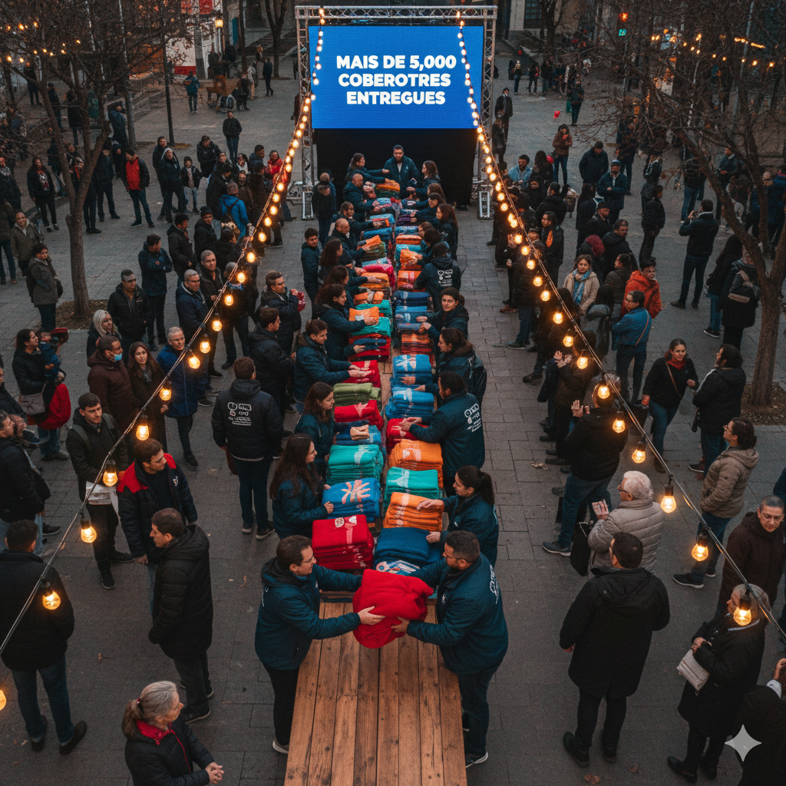

Campanha do Agasalho: Missão Cobertor
A chegada do inverno intensifica a vulnerabilidade da população em situação de rua. A "Missão Cobertor" é nossa resposta direta a essa emergência. Atuamos em diversas frentes para levar não apenas um item físico, mas também um gesto de carinho e dignidade.
+10.000
Cobertores Distribuídos
+5.000
Refeições Servidas
+500
Voluntários Engajados
Sua participação é vital para que a Missão Cobertor continue aquecendo corações e corpos. Cada gesto de solidariedade faz a diferença na vida de quem mais precisa. Junte-se a nós nesta causa!